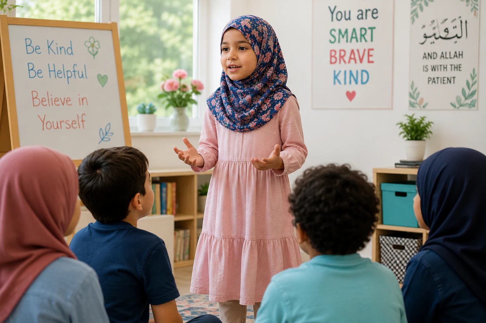

In a world that often makes Muslim children feel like outsiders, building unshakeable confidence is not just a parenting goal — it is a necessity. We want our children to walk with their heads held high, proud of their identity, resilient in the face of failure, and brave enough to stand up for what is right. But how do we build this confidence without crossing the line into arrogance? In this comprehensive guide, we will explore the Islamic framework for raising confident, self-assured children rooted in Tawakkul (trust in Allah) and Izzah (true honor).
📖 In This Complete Guide, You'll Learn:
- The Islamic definition of true confidence (Izzah vs. Kibr)
- How to praise effort over innate talent (The Islamic Growth Mindset)
- Practical ways to give children autonomy and responsibility
- How to teach them to say "No" to peer pressure with bravery
- How to help them bounce back from failure using Sabr and Tawbah
- The critical role of your own confidence as a parent
🔑 Key Takeaways
- True confidence comes from knowing one's worth as a creation of Allah, not from worldly validation.
- Praise the process (hard work, kindness, persistence), not just the outcome (grades, looks).
- Give children age-appropriate choices and responsibilities to build decision-making muscles.
- Normalize failure as a stepping stone, using the stories of the Prophets as inspiration.
- Model the behavior: children mimic how their parents handle stress, criticism, and success.
📑 In This Article
- The Islamic Foundation of Confidence (Izzah vs. Kibr)
- Praise Effort, Not Just Intelligence
- Teach Them Their True Worth
- Give Them Responsibilities & Autonomy
- Teach Them to Speak Up (Amr bil Ma'ruf)
- Handle Failures with Grace (Sabr & Tawbah)
- Protect Them from Destructive Criticism
- Frequently Asked Questions
- Final Thoughts
The Islamic Foundation of Confidence (Izzah vs. Kibr)
Before we build confidence, we must define it Islamically. In the West, confidence is often confused with arrogance, loudness, or self-promotion. In Islam, true confidence is called Izzah (honor, dignity, and self-respect). It is a quiet, unshakeable inner strength that comes from knowing that Allah is with you.
The Prophet (PBUH) said: "The strong believer is better and more beloved to Allah than the weak believer, while there is good in both."
— Sahih Muslim 2664Notice the Prophet (PBUH) didn't say "the physically strong" or "the loudest." He meant strong in character, strong in faith, and strong in resilience. Teach your child that their confidence doesn't come from their grades, their looks, or their followers on social media. It comes from their connection to the King of Kings.
Praise Effort, Not Just Intelligence
Psychologists call this the "Growth Mindset," and it aligns perfectly with the Islamic concept of Amal (action/effort). If you constantly tell your child, "You are so smart!" or "You are so beautiful!", they will become terrified of making mistakes or growing older. Instead, praise their hard work.
What to Say Instead:
- Instead of: "You're a genius for getting an A!"
Say: "Masha'Allah, I saw how hard you studied for that test. Your effort really paid off!" - Instead of: "You're the best player on the team!"
Say: "I love how you kept trying even when you were tired. That's real determination." - Instead of: "You're so pretty/handsome."
Say: "You have such a kind smile, and your heart is even more beautiful."
This teaches them that their value lies in what they do and who they are inside, not in fixed traits they cannot control.
Teach Them Their True Worth
In a world that constantly tells children they are not enough (not rich enough, not cool enough, not pretty enough), we must be the voice that reminds them of their inherent worth.
- Allah Chose Them: "Allah created you perfectly. He chose you to be a Muslim, and He gave you unique talents to help others."
- Opinions Don't Define You: "What people think of you is not your problem. Your job is to please Allah. If you do that, the right people will love you."
- Mistakes Don't Define You: "Making a mistake doesn't make you a bad person. It makes you human. Allah loves those who repent and try again."
Dua for Anxiety & Low Self-Esteem: "Allahumma inni a'udhu bika minal-hammi wal-hazan..."
"O Allah, I seek refuge in You from anxiety and sorrow, weakness and laziness..." (Bukhari 6369)
Give Them Responsibilities & Autonomy
Confidence is built through competence. If we do everything for our children, we send the message: "I don't trust you to handle this." Give them age-appropriate choices and responsibilities.
Practical Steps:
- Toddlers (Ages 2-4): Let them choose between two outfits. Let them pour their own water (even if it spills!).
- Young Kids (Ages 5-8): Assign them a daily chore, like feeding the pet or setting the table. Let them order their own food at a restaurant.
- Pre-Teens (Ages 9-12): Let them manage a small weekly allowance. Let them plan a family activity for the weekend.
When they succeed, they feel capable. When they fail, they learn to problem-solve. Both build unshakeable confidence.
Teach Them to Speak Up (Amr bil Ma'ruf)
A confident Muslim child is not a people-pleaser. They know how to say "No" respectfully but firmly, especially when their values are compromised.
Role-Play Scenarios at Home:
- "What would you say if a friend asked you to cheat on a test?"
- "How would you respond if someone made fun of your halal lunch?"
- "What do you do if an adult asks you to do something that feels wrong?"
Teach them the phrase: "I'm not comfortable with that, but thanks." Remind them of the Hadith: "Whoever among you sees an evil, let him change it with his hand; if he cannot, then with his tongue..." (Muslim 49). Speaking up is a form of worship.
Handle Failures with Grace (Sabr & Tawbah)
How your child handles failure will determine their lifelong resilience. If they fail a test, lose a game, or make a bad choice, do not yell or shame them. This is the moment they need you most.
1. Validate: "I know you're disappointed. It's okay to feel sad."
2. Reframe: "This is not the end. This is a lesson. What can we learn for next time?"
3. Reset: "Let's make dua, make a new plan, and try again. Allah loves those who keep trying."
Share the story of Prophet Yunus (AS) in the belly of the whale, or Prophet Yusuf (AS) in the well. They faced immense darkness but never lost hope in Allah's plan. That is the ultimate confidence.
Protect Them from Destructive Criticism
Words have the power to build or break a child's spirit. The Prophet (PBUH) never mocked, belittled, or used harsh nicknames with children. We must be equally careful.
"Why can't you be more like your cousin?" "You're so clumsy." "You never listen." "What's wrong with you?" These phrases become the inner voice of the child for the rest of their life.
When you must correct them, sandwich the critique between two positives. "Masha'Allah, you did a great job cleaning your room. Next time, let's make sure the toys go in the bin. I really appreciate your help today!"

Frequently Asked Questions
🌱 Start Building Their Confidence Today
You don't have to change everything overnight. Start with one thing today: catch your child doing something good and praise their effort specifically. Watch their eyes light up. May Allah make our children strong in faith, character, and confidence. Ameen.
What is one way you will encourage your child today? Share below!
Final Thoughts
Raising a confident Muslim child is a beautiful, ongoing journey. It requires us to shift our focus from demanding perfection to nurturing growth. It requires us to replace criticism with connection, and fear with faith. When a child knows that they are loved by their parents and beloved by Allah, there is no challenge in this world they cannot face. Keep making dua for their strength, keep modeling resilience, and trust that Allah is shaping them into the strong believers they are meant to be. May Allah grant our children Izzah in this world and the next. Ameen.